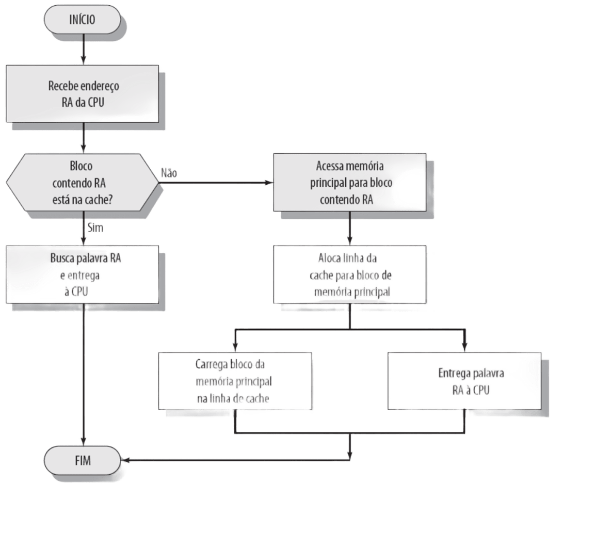
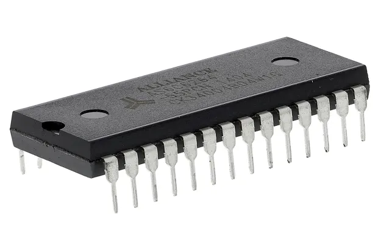
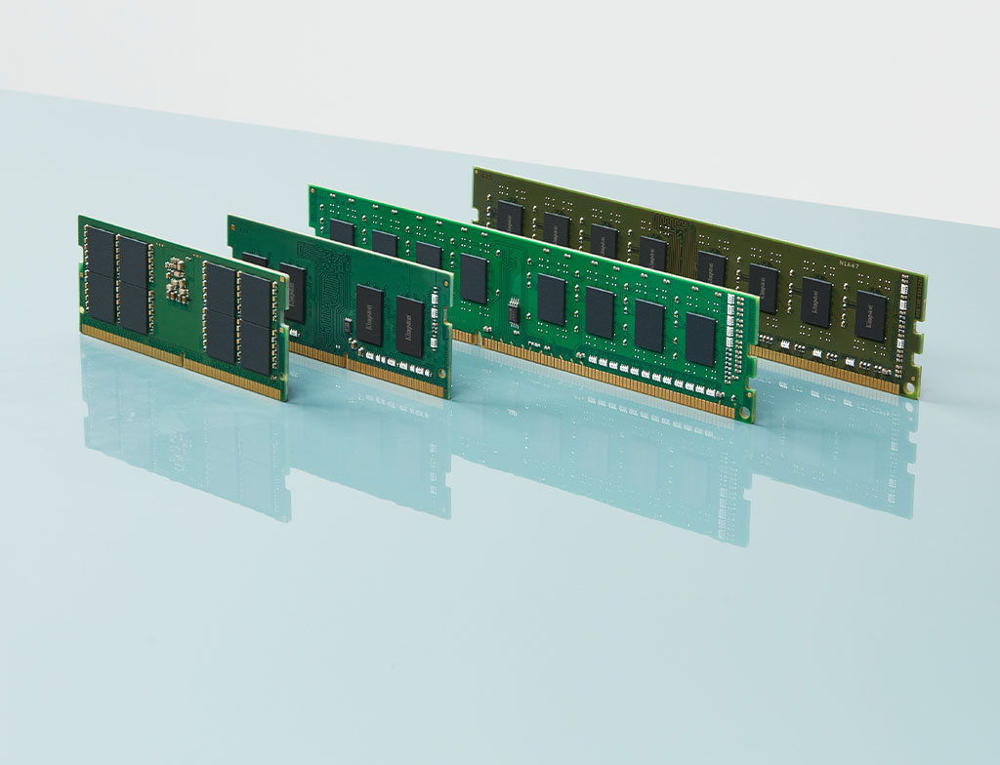

Compreendendo a Hierarquia de Memória
A hierarquia de memória é uma organização estrutural baseada no princípio da localidade, projetada para otimizar o tempo de acesso aos dados e o custo de armazenamento em sistemas digitais. O objetivo central é fornecer ao processador a ilusão de uma memória tão rápida quanto a tecnologia mais veloz disponível, e tão ampla quanto a tecnologia de armazenamento mais barata.

O Papel dos Registradores e da Memória Cache
No topo da hierarquia, operando na mesma velocidade do processador, encontram-se os registradores. Eles armazenam os dados imediatamente necessários para a execução das instruções. Logo abaixo, a memória Cache atua como um buffer temporário de alta velocidade, reduzindo a latência de acesso à memória principal. O trânsito de dados entre essas camadas é fundamental para evitar ciclos de ociosidade na CPU.

Voltar ao topo
Galeria de Componentes de Hardware




Referências Utilizadas
- STALLINGS, William. Arquitetura e Organização de Computadores. 10ª ed.
- PATTERSON, David A.; HENNESSY, John L. Organização e Projeto de Computadores. 5ª ed.
Voltar ao topo